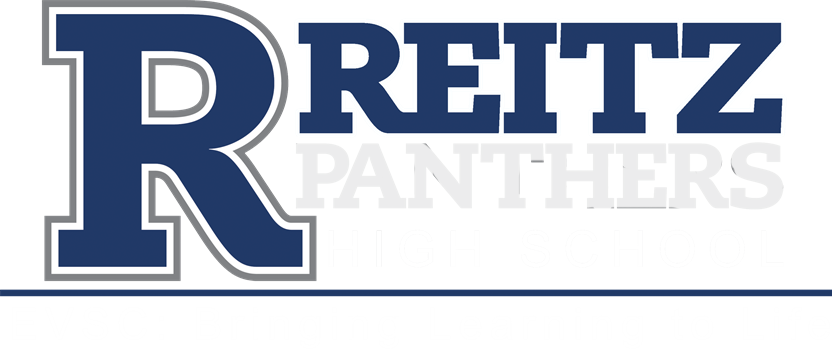

- 
About Me
Hi, my name is Hunter. I play soccer for FJ Reitz High School and travel for Indiana Fire. Soccer is definitely my biggest passion along with programming. I have played soccer for a total of almost 9 years now and the only way that I see myself stopping is if college takes up too much of my time. I do feel as though I can manage my time fairly well as of right now. The other big part of my life is schooling and even more importantly, the work I do at SICTC. I am taking an intro computer science and web development course there. Before this, I learned a small amount of html code at the very beginner computer science class at Reitz. I also started a 100 days of python course on Replit but far surpassed it after taking the first part of my SICTC class and since has seldom time to proceed with it. My personal projects are fairly beginner but mainly focused on terminal-based python scripts. Even though it is one of my more simple projects I still think my hangman game is still my favorite because it is one of my first projects I ever did and seemed so advanced when I first did it but when I look at it now I think I could redo it in about half an hour.
Outside of schooling I ride dirt bikes, hunt, fish, and ski. I consider myself an outgoing person and am usually willing to try new things. The dirt bike takes up almost any time I’m not doing any of the other things listed. I saved up enough money over the course of about 3 years to buy my first bike along with my dad. After about a year with that bike I was ready to move up in size and bought my dad’s bike off of him and he no longer rides. I saved up the money to get my bikes by working what is still my current job of calibrating test weights at Premier Scales & Systems. This is my dad’s company, the pay isn’t great and the hours are worse but I have been working there ever since I was 14 and have been around the people ever since I was able to remember. However, over the summer I am looking to get a job somewhere that is involved with software and computers at the very least.